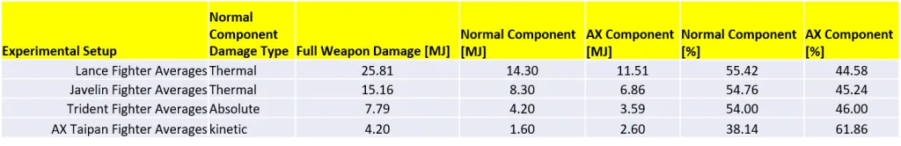
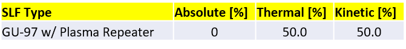
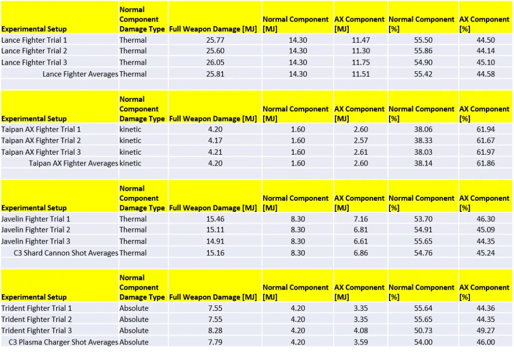
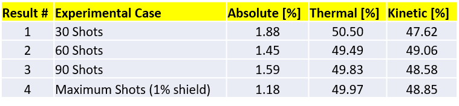
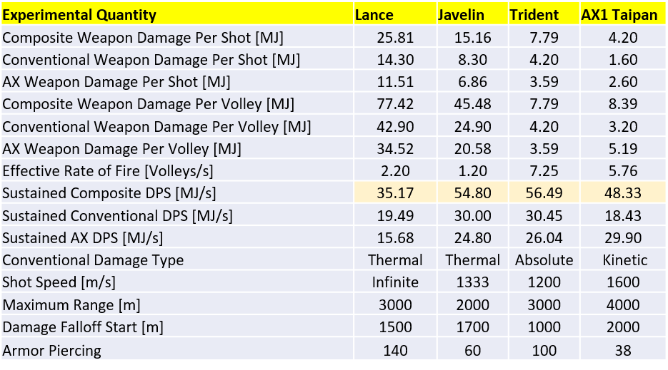

The focus of this study is the detailed analysis of Ship Launched Fighter (SLF) damage partitions, namely the analysis of damage characteristics of Anti-Xeno (AX) fighters. This study draws on the analysis of AX weapon damage partitions that was recently conducted [1]. The table below summarizes the damage partitions of the four AX SLFs. It should be noted that the damage characteristics listed for each fighter in the “right hand panel” could be off by 10%, thereby affecting the values listed below.

The results indicate that, just like other Guardian weapons, the AX SLFs exhibit a damage partition that is 55% conventional damage and 45% AX. The AX1 Taipan fighter shows a damage partition that is roughly 38% conventional and 62% AX, which is similar to the damage partition of standard AX multi-cannons.
As a bonus, the damage partition of SLFs equipped with the Plasma Repeater was analyzed. The techniques involved were taken from the Weapon Damage Partition Analysis that was recently carried out [2]. The table below summarizes the results.

The Pilot’s Federation had stated that SLFs equipped with the Plasma Repeater do not deal absolute damage but instead have 50% thermal and 50% kinetic [3]. We can confirm with confidence that is the case.
In the case of AX SLFs, the techniques and formulations described in the AX Weapon Damage Partitions [1] analysis were used. We will therefore reference that study here in its entirety. Similarly, the analysis of Plasma Repeaters was carried out by using the same techniques employed in the Weapon Damage Partition Analysis [2].
We begin with the results for AX SLFs. The data acquisition and experimental methodology used in this analysis is the same one employed in the shield strength analysis [4]. For each AX weapon three experimental trials were conducted and the results were averaged together. Each experimental run consisted of deploying and positioning the SLF within the “damage falloff start” range and delivering a specific amount of weapon volleys. The table below summarizes the results for each AX SLF.

The results indicate that Guardian SLFs exhibit the same damage partition as “standard” Guardian weapons, i.e. 55% conventional damage and 45% AX damage. The damage partition of the AX1 Taipan SLF is 38% conventional and 62% AX, which is similar to the the breakdown of AX multi-cannons of regular ships.
A couple of things need to be pointed out about the Trident SLF. Firstly, the Plasma Auto Cannon information listed in the “right hand panel” claims that the SLF exhibits a Damage per Second (DPS) of 4.2 MJ/s. When we attempted to plug this number into the damage equations nonsensical solutions were obtained, even after taking into account the fact that it the SLF is actually equipped with 3 of such weapons. After much experimentation, we discovered that the 4.2 figure actually corresponds to the conventional (i.e. absolute) damage component of each Plasma Auto Cannon bolt. It was only then that the damage equations were returning solutions that made sense. This experience is yet another example of how the information provided by Pilot’s Federation is incorrect or mislabeled.
We now turn to the analysis of the damage partition of SLFs with Plasma Repeaters. The goal here was to once and for all confirm the statement put out by the Pilot’s Federation regarding the damage partition of the Plasma Repeater, i.e. that it does not possess absolute damage but is instead a dual component weapon with thermal and kinetic damage. The methods used here are the same as those employed in the Weapon Damage Partition Analysis of Plasma Accelerators. The table below shows the solutions of the three-component equations for four different damage level scenarios.

It should be noted that there is an experimental error of 1% when we measure the damage taken by target’s shield. There is therefore an implicit error in the solution to the three-component equations. With that in mind, we can conclude that the absolute component in each of the tests above is essentially zero. It only appears as non-zero because of the inherent experimental errors. We can therefore conclude that the damage partition in Plasma Repeaters is strictly 50% thermal and 50% kinetic. Despite the absence of absolute damage, the Plasma Repeater is still a darling of many combat pilots because it has infinite ammunition, very low distributor draw, fast reload, and very low heat build up.
After carrying the analysis above, one can’t help but think about the usefulness of each fighter in Thargoid Interceptor combat. The table below shows the damage characteristics of each SLF, namely the sustained DPS, which will serve as the fulcrum of our discussion. The sustained DPS is the value obtained when one takes into account the duration of the weapon reload and the fact that the weapon can fire volleys consisting of multiple shots (i.e. Gauss Focus Cannon, Shard Launcher, and AX Multi-Cannon). The figures in the table below were computed because, as noted in the previous section regarding the inadequacy of the Plasma Auto Cannon documentation provided by the Pilot’s Federation, we wanted to be confident of the accuracy of DPS values.

The observation that we can make with confidence is that the Lance is the most versatile and useful of all four Anti-Xeno SLFs. Although it has the lowest sustained DPS due to its relatively long reload time, it can deliver a large amount of damage instantaneously, making it the best SLF for killing Interceptor hearts.
The Javelin’s high DPS and thermal damage make it great for taking down the Interceptor shield in a short amount of time. Although it has a maximum weapon range of 2000m, it has a relatively wide window where it operates at full damage. It doesn’t suffer from the heat build up issues that the Lance and the Trident have to contend with.
The AX1 SLF stacks surprisingly well against the newer SLFs based on Hybrid Guardian technology. It has the longest range and widest operational window where the weapon deals full damage. That means it can engage the Interceptor from a much safer distances, thereby enhancing its survivability. The AX1 is also the sturdiest of the four AX SLFs, making it the go-to SLF for large ships that need to keep the Interceptor distracted while performing a reboot between hearts.
And now turn to discussing the arguably most beautiful of the AX SLFs, the Trident. Despite it’s great looks, it is by far the least useful of the bunch. Although it has the highest sustained DPS on paper, it can hardly operate at full capacity due to three limiting factors: 1) short weapon range, 2) high distributor draw, and 3) rapid heat build-up. It requires the pilot to be within 1000m of the target in order to inflict maximum damage, which is a rather tall order for a fragile Guardian SLF. Additionally, the weapon has an exceedingly high distributor draw, thereby limiting sustained fire to less than 5 seconds. Similarly, the rapid heat build up forces the pilot to scale back on the fire lest the ship’s internals suffer serious damage. Despite it’s high Armor Piercing rating of 100, most pilots would rather fly the AX1 (or the other Guardian SLFs) over the Trident because it does not have the same crippling limitations.
We have carried out an analysis of the damage partitions of Ship Launched Fighters. The foundation of this analysis was a rigorous mathematical treatment of the problem. Careful experiments were conducted to extract the parameters needed for our damage model equations. As noted in the executive summary the results presented here depend on the accuracy of the information provided by the Pilot’s Federation.
We also used the results of this analysis to articulate why the Lance SLF is the best Anti-Xeno SLF out there. In particular, we were able to identify the reasons why the Trident SLF is the least effective of the four AX SLFs.
Finally, we were able to confirm that the damage partition of SLFs with Plasma Repeaters is 50% thermal and 50% kinetic.
This study was funded in part by the Canonn Interstellar Research Group and the Xeno Investigation division of the Anti-Xeno Initiative.
We would like to thank CMDR Joulupunikki for participating in this study. In addition to piloting the target vessel, he provided the engineered shields for this analysis as well as peripheral hardware. We would also like to thank CMDR TrueSilver for encouraging us to investigate the damage partition of Plasma Repeaters. Special thanks is given to CMDR 100.RUB for providing guidance, words of wisdom, and becoming a strong advocate for transparency in weapon documentation for the benefit of the galactic community.